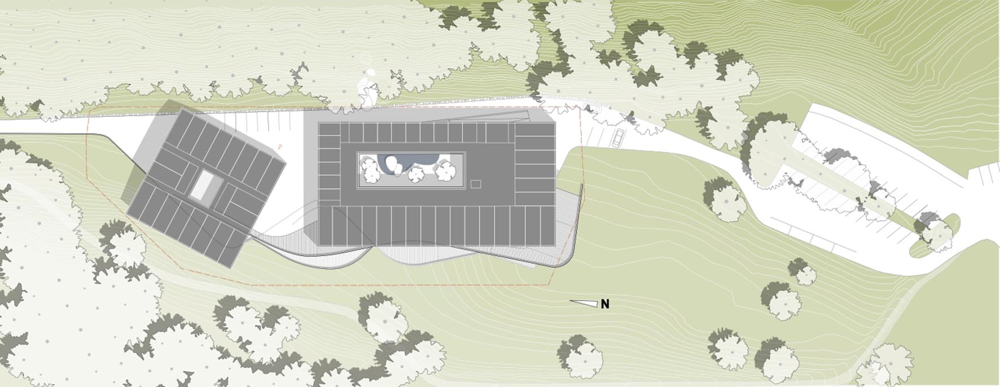
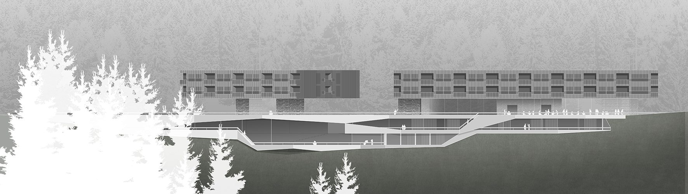
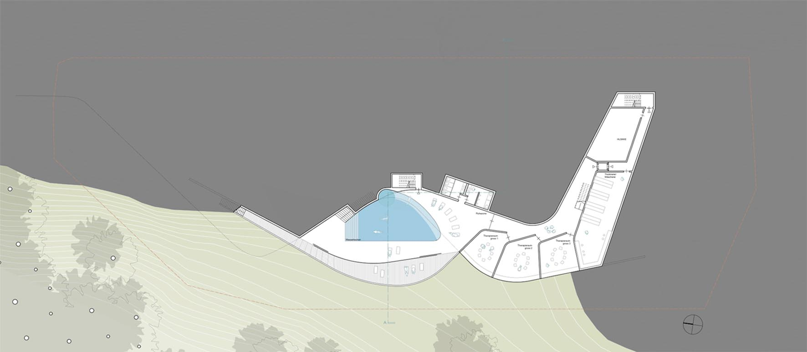
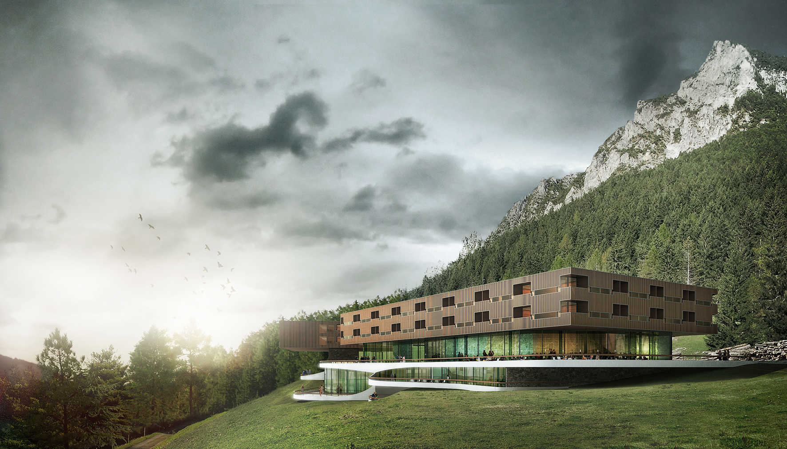

Modell

Lageplan

Ansicht Ost

Zugangsstockwerk

OG -1

OG -2

Querschnitt

OG 1

Haupteingang
Der besonders Ort – Gaflei, mit seiner Topografie, der Almwiese, dem Bergwald, den Felsen des Alpspitz im Rücken und
dem großartigen Panoramablick ins Rheintal, verpflichtet dazu, ein Gebäude zu entwickeln, das sich in die landschaftliche
Situation einbindet.
Hier deckt sich dieses Interesse ganz natürlich mit dem eigentlichen Ziel und Zweck des Gebäudes, ein Umfeld zu schaffen,
das die Therapie von Patienten mit Stressfolge-erkrankungen möglichst unterstützt und befördert.
Ein zentraler Aspekt dabei ist, den Patienten aus seiner alltäglichen und belasteten Situation zu befreien, also ein
Umfeld zu bieten, dass sich in einem Kontrast zu seiner normalen Umgebung befindet. Dieses kontrastierende Umfeld ist
hier durch den besonderen Ort gegeben. Deshalb muss sich die Architektur nur entsprechend zurückhalten und die Landschaft
“die Arbeit machen lassen”.
Um die relativ große Baumasse in einen für die landschaftliche Situation verträglichen Maßstab zu transformieren, wird
deshalb das Volumen portioniert und in klar ablesbare Schichten übereinander gelagert.
Die unterste Schicht wird in den Hang integriert. Garage und Infrastrukturräume verschwinden völlig, Therapie- und SPA-Bereiche
öffnen sich mit großzügigen Terrassen zur Aussicht. Diese zeichnen mit ihren sich verschränkende Brüstungen die Topografie
in abstrakter Form nach und geben dieser Gebäudeschicht somit ein landschaftliches Gepräge.
Über diesem Landschaftssockel befindet sich die Eingangsebene mit Lobby, Restaurant und Saal. Diese Ebene ist offen
zur Aussicht konzipiert. Dienende Räume, wie Küche, Treppen und Aufzüge bilden massive Kerne, die auch das Tragwerk
für die darüber liegende Schicht darstellen – Zwei Ebenen mit insgesamt 50 Gastzimmern, der Verwaltung und den Mitarbeiterappartements.
Diese oberste Schicht ist ein einfacher kubischer Körper der in Material, Bauart und Charakter eine Korrespondenz zu
den ortstypischen Wirtschaftsgebäuden aufbaut. Die Räume dieser 2 Ebenen bilden ein Geviert um einen Patio der als gestalteter
Freiraum einen kontemplativen Ruhepol zur überwältigenden Berglandschaft bildet. Die Assoziationen zu einer Klosteranlage
mit Kreuzganghof sind durchaus beabsichtigt: Auch hier ist die Architektur baulicher Ausdruck einer Gemeinschaft, für
die Besinnung, Sammlung, “Wieder zu sich finden” wichtige Themen sind.
Der Materialkanon des gesamten Gebäudes, außen und innen, reduziert sich auf nur 2 Materialien – Holz und Stein. Dies
dient nicht nur der landschaftlichen Integration, sondern befördert eine ruhige und konzentrierte Grundstimmung und
schafft damit den geeigneten Hintergrund für die verschiedenen Therapiemaßnahmen, die in diesem Haus Anwendung finden
werden.

Ansicht der Lobby